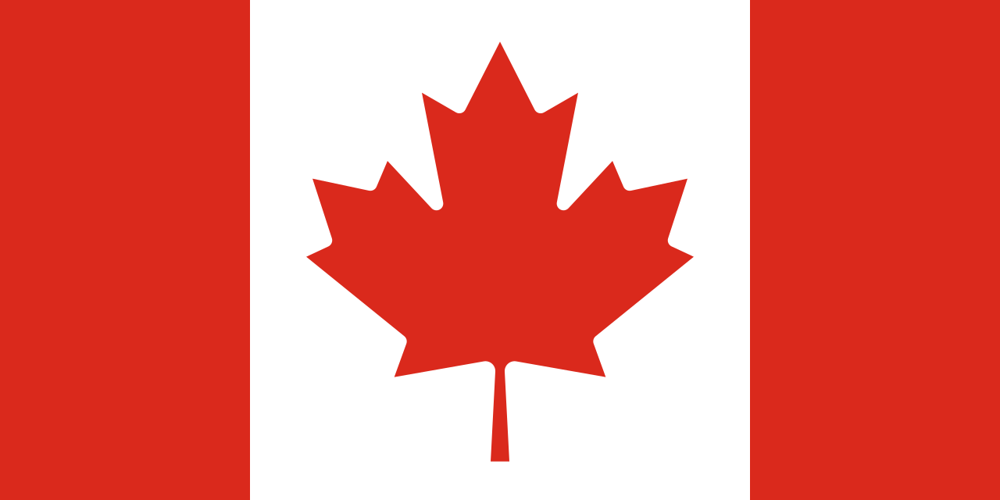

Kanada (Canada, výslovnost [ˈkʰænədə] v angličtině a [kanada] ve francouzštině) je rozlohou druhá největší země světa, rozkládající se v severní části Severní Ameriky. Hraničí se Severním ledovým oceánem (sever), Atlantikem (východ), USA (jih a severozápad) a Tichým oceánem (západ). Kanada vznikla na území osídleném Indiány a Inuity jako unie britských zámořských teritorií a kolonií, z nichž některé byly předtím součástí francouzské koloniální říše. Nezávislost na Velké Británii získala mírovou cestou Zákonem o Britské Severní Americe (anglicky British North America Act) z roku 1867 a Canada Actem v roce 1982. Kanada je federací deseti provincií a tří spolkových teritorií, parlamentní konstituční monarchií. Sama sebe definuje jako zemi dvoujazyčnou (oficiální jazyky jsou angličtina a francouzština), navíc je kupříkladu v teritoriu Nunavut oficiálním jazykem domorodá inuitština. Z průmyslového hlediska jde o technicky vyspělou zemi disponující rozsáhlými přírodními a nerostnými zdroji. Země má úzké politické a ekonomické vztahy s USA, s nimiž má dlouhou vojensky nestřeženou hranici. Jediným dalším státem, u něhož lze smysluplně mluvit o hranici s Kanadou, je Dánsko, od jehož závislého území – Grónska – oddělují kanadské arktické ostrovy jen úzké průlivy.
Historie KanadyArcheologické studie datují první lidské osídlení do doby před cca 26 000 lety v případě severního Yukonu a před cca 9 500 lety v případě jižního Ontaria. První evropské osídlení založili na kanadském území Vikingové okolo roku 1000 v L'Anse aux Meadows, to však existovalo pouze krátce a z dlouhodobého hlediska nemělo žádný význam. Kanada (resp. její východní pobřeží) byla pro Evropu znovu objevena na přelomu 15. a 16. století výzkumnou plavbou Johna Cabota (1497), další výpravy sem podnikli Jacques Cartier (1534) a další. První dlouhodobé evropské osídlení zde založili Francouzi. Šlo o Port Royal (1605) a Québec (1608). Angličané je následovali v roce 1610 v oblasti Newfoundlandu. S příchodem Evropanů se na kanadském území začaly rychle šířit evropské choroby, které decimovaly původní obyvatele a otevíraly kolonistům cestu do indiánských území. Francouzi v 17. století kolonizovali okolí řeky sv. Vavřince, zatímco Britové osidlovali třináct kolonií na východním pobřeží dnešních USA. Společnost Hudsonova zálivu se soustředila na oblast Země prince Ruprechta. V letech 1689–1763 došlo k sérii tzv. francouzských a indiánských válek. Tyto války vyústily v zánik francouzské moci v Kanadě, která připadla Velké Británii. Ta v roce 1774 schválila pro uklidnění situace tzv. Quebec Act, který akceptoval katolické náboženství, francouzský civilní zákoník a francouzštinu jakožto úřední jazyk na území provincie Québec. Za americké války za nezávislost se Kanada nepřipojila k povstání 13 kolonií a stala se cílovou zemí desítek tisíc loajalistů odcházejících z území dnešních USA. Tím se dostala na území Québecu řada anglicky mluvících protestantů usídlujících se zejména v oblasti Velkých jezer. To vedlo k pozdějšímu rozdělení provincie Québec na Horní a Dolní Kanadu, pro Horní Kanadu (nynější provincie Ontario) nebyl Quebec Act nadále relevantní. V britsko-americké válce v letech 1812–1815 hrála kanadská fronta enormně důležitou roli. USA se opakovaně pokoušely obsadit Horní i Dolní Kanadu, ale jejich vpády byly odraženy. Významný byl v tomto ohledu postoj indiánského obyvatelstva, které podporovalo spíše Brity (na britské straně bojovaly hlavní kmeny z oblasti Velkých jezer i Tecumsehova aliance), jakož i místních kolonistů. Války se francouzští obyvatelé většinou neúčastnili a pokud ano, tak většinou na straně Britů. Válka s USA skončila nakonec uznáním statu quo ante. Následovala expanze na sever a západ za pomoci Severozápadní společnosti a Společnosti Hudsonova zálivu, která intenzívně probíhala již několik desetiletí. V roce 1837 došlo k povstání části francouzského obyvatelstva (viz povstání roku 1837). Po jeho potlačení se Británie rozhodla vytvořit z Horní a Dolní Kanady jeden celek (Sjednocená kanadská provincie). V roce 1846 byly podepsáním Oregonské úmluvy ukončeny teritoriální spory mezi USA a Kanadou (za hranici na západě byla určena 49. rovnoběžka). Prudký růst kanadské populace díky velké imigraci z Evropy i vysoké porodnosti vedl k osidlování kanadského vnitrozemí a zakládání nových kolonií: Vancouver a Britská Kolumbie. Zároveň někteří Evropané začali Kanadu opouštět a odcházeli do USA. V roce 1867 byl přijat Zákon o Britské Severní Americe, který sjednotil britské severoamerické kolonie Sjednocená provincie Kanada, Nové Skotsko a Nový Brunšvik v jediné, už do značné míry autonomní dominium. Krátce poté došlo k znovuvytvoření provincií Ontario a Québec. Do těchto provincií byla začleněna Ruprechtova země a přičleněny byly oblasti bývalé Severozápadní společnosti jakožto Severozápadní teritoria a nově vytvořená provincie Manitoba. Následně byla připojena Britská Kolumbie (od roku 1866 sjednocená s Vancouverem). Osidlování nových území bylo podpořeno mimo jiné výstavbou tři transkontinentálních železnic a ustavením královské severozápadní jízdní policie. V roce 1873 se připojila další kolonie (Ostrov prince Edvarda) a provinční status získaly části Severozápadních teritorií: Alberta a Saskatchewan (1905).
| Hlavní město | Ottawa |
|---|---|
| Nejvyšší bod | Mount Logan, Yukon (5959 m. n. m.) |
| Poloha | 56° s. š., 109° z. d. |
| Počet obyvatel | 37 800 000 (2019) 3,5osob/km2 |
| Rozloha | 9 984 670 km2 ( 2. na světě ) |
| Jazyk | Angličtina, francouzština, inuitština |
| Náboženství | Křesťané 67,2 % (katolíci 43,6 %, Sjednocená církev Kanady 9,6 %), muslimové 3,2% |
| Státní zřízení | Federativní konstituční republika (Alžběta II.) |
| Vznik | 1. července 1867 |
| Měna | Kanadský dolar |
Vlajka Kanady
Kanadské palačinky